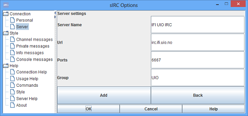
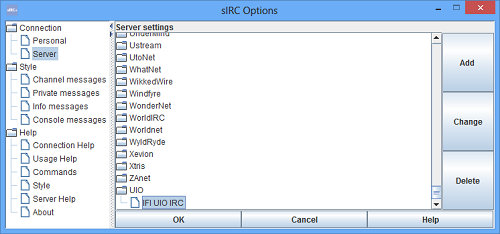

You can go into Options -> Server to configure sIRC with your personal servers
Server that are chosen in the tree will appear as selected server when you return to personal options, this server will also become your selected server next time you start sIRC.
When adding or editing servers, the group will specify which parent node your server will place itself under, these are case sensitive names like "Quakenet". If you want to add a new group simply type in something of your choosing, these will be place in the bottom of the tree, Predefined networks are the one displayed on the top, if these have no more server they will become an empty leafs.
Personal servers can easily be added or edited by using the change or add buttons in server settings.
We add a new server with standard port for irc.
The new server is now added and ready for use, located in the server tree.